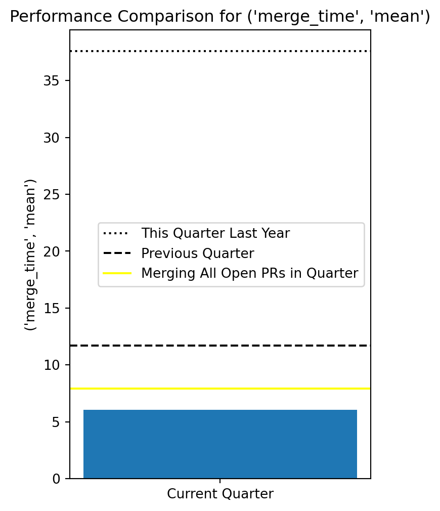
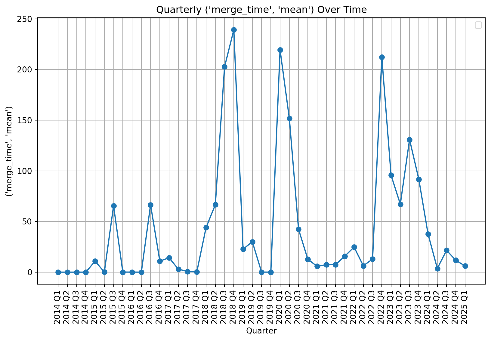

| issue_number | avg_interaction_time | comment_count | merge_time | |||
|---|---|---|---|---|---|---|
| count | mean | mean | sum | mean | ||
| year | quarter | |||||
| 2014 | 1 | 9 | 0.00 | 0.22 | 2.0 | 0.00 |
| 2 | 4 | 0.00 | 0.25 | 1.0 | 0.00 | |
| 3 | 5 | NaN | 0.00 | 0.0 | 0.00 | |
| 4 | 5 | 0.18 | 0.60 | 3.0 | 0.00 | |
| 2015 | 1 | 7 | 1.49 | 0.43 | 3.0 | 10.84 |
| 2 | 3 | 0.06 | 0.33 | 1.0 | 0.09 | |
| 3 | 10 | 25.43 | 2.70 | 27.0 | 65.41 | |
| 4 | 6 | 7.59 | 0.67 | 4.0 | 0.06 | |
| 2016 | 1 | 5 | 0.01 | 0.80 | 4.0 | 0.03 |
| 2 | 3 | 0.58 | 2.33 | 7.0 | 0.00 | |
| 3 | 4 | 50.59 | 1.25 | 5.0 | 66.41 | |
| 4 | 9 | 128.80 | 2.33 | 21.0 | 10.93 | |
| 2017 | 1 | 17 | 55.70 | 1.35 | 23.0 | 14.13 |
| 2 | 8 | 86.14 | 0.88 | 7.0 | 3.01 | |
| 3 | 20 | 122.84 | 0.35 | 7.0 | 0.53 | |
| 4 | 2 | 14.94 | 5.50 | 11.0 | 0.29 | |
| 2018 | 1 | 11 | 80.27 | 3.18 | 35.0 | 44.04 |
| 2 | 4 | 54.36 | 4.50 | 18.0 | 66.55 | |
| 3 | 7 | 110.12 | 2.00 | 14.0 | 202.69 | |
| 4 | 1 | 59.78 | 3.00 | 3.0 | 239.13 | |
| 2019 | 1 | 7 | 61.63 | 2.86 | 20.0 | 22.64 |
| 2 | 6 | 14.12 | 1.33 | 8.0 | 30.01 | |
| 3 | 7 | 101.26 | 1.86 | 13.0 | 0.04 | |
| 4 | 5 | 154.17 | 1.40 | 7.0 | 0.01 | |
| 2020 | 1 | 11 | 116.43 | 2.18 | 24.0 | 219.36 |
| 2 | 11 | 91.00 | 1.91 | 21.0 | 151.85 | |
| 3 | 15 | 27.51 | 1.73 | 26.0 | 42.22 | |
| 4 | 27 | 32.00 | 2.74 | 74.0 | 12.75 | |
| 2021 | 1 | 39 | 40.08 | 2.54 | 99.0 | 5.72 |
| 2 | 17 | 36.16 | 3.76 | 64.0 | 7.39 | |
| 3 | 40 | 7.45 | 2.95 | 118.0 | 7.45 | |
| 4 | 34 | 5.70 | 3.12 | 106.0 | 15.76 | |
| 2022 | 1 | 14 | 38.35 | 1.29 | 18.0 | 24.73 |
| 2 | 21 | 2.33 | 2.48 | 52.0 | 6.29 | |
| 3 | 12 | 4.11 | 2.00 | 24.0 | 12.87 | |
| 4 | 16 | 71.31 | 3.44 | 55.0 | 212.28 | |
| 2023 | 1 | 8 | 54.43 | 1.38 | 11.0 | 95.64 |
| 2 | 9 | 59.58 | 1.56 | 14.0 | 67.08 | |
| 3 | 10 | 60.44 | 2.70 | 27.0 | 130.85 | |
| 4 | 12 | 32.29 | 2.00 | 24.0 | 91.65 | |
| 2024 | 1 | 11 | 10.39 | 2.27 | 25.0 | 37.57 |
| 2 | 16 | 1.79 | 1.75 | 28.0 | 3.61 | |
| 3 | 25 | 4.75 | 1.60 | 40.0 | 21.52 | |
| 4 | 22 | 6.51 | 0.95 | 21.0 | 11.72 | |
| 2025 | 1 | 17 | 1.81 | 1.53 | 26.0 | 6.05 |
Pulls Reports
Hello, this page will showcase the dashboard for pull requests!
/tmp/ipykernel_2150/2777657368.py:177: UserWarning: No artists with labels found to put in legend. Note that artists whose label start with an underscore are ignored when legend() is called with no argument.
plt.legend()
